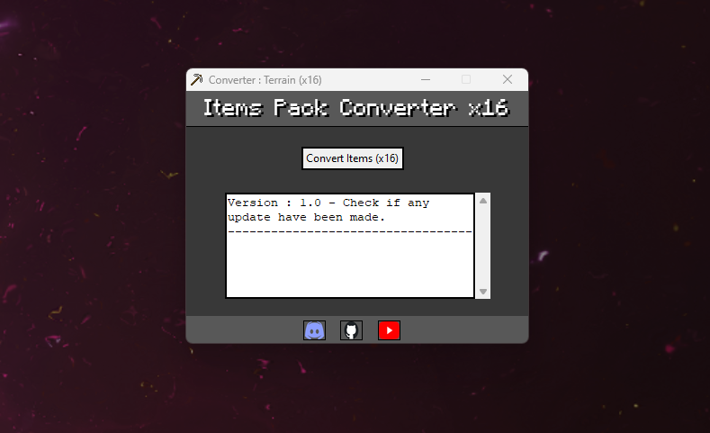
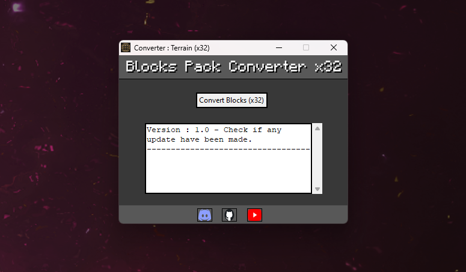

Java to WiiU Texture Pack Converter
Présentation
Ce logiciel permet de convertir les blocs et les items des textures packs de la version Java vers la version WiiU


Ce logiciel permet de convertir les blocs et les items des textures packs de la version Java vers la version WiiU